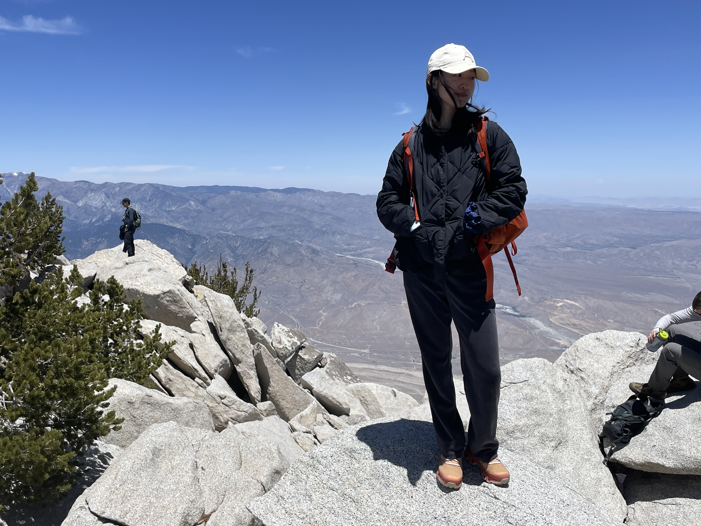

Bingbing Hu
-
bingbing (at) ucsd (dot) edu

I am a second-year Ph.D. student at the University of California San Diego, where I am fortunate to be advised by Barna Saha and be part of the EnCORE Institute.
I am interested in algorithms in general, and more specifically in string algorithms and fine-grained complexity.
Outside of research, I enjoy climbing, hiking, running, cooking, and playing the guitar :)
